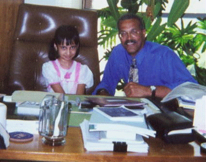
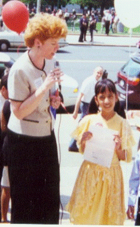
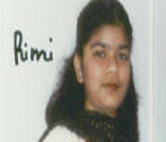
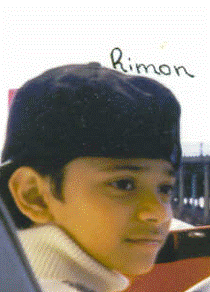

|
|
M-M
Special article
Bangladesh in the eyes of the second generation of Bangladeshi-Americans
Introduction and editing by
Jahed
Ahmed
Published
on
December 16, 2006
It was February, 2004*.
M-M had decided to celebrate 1st March as a Rationalist Day. I
was trying to collect articles from different sources. How do the second
generation of Bangladeshi-Americans—those who have been either born or
raised in the USA—view the land of their parents and ancestors? The
question came into my mind. Biswarup Das Gupta, a long time close friend of
mine introduced me with a few young Bangladeshi-American school going
students. Admittedly, from what I had seen I was skeptic that the second
generations would not give much of a damn to Bangladesh. Just like citizens
of their host country USA, most of the second generation Bangladeshi
Americans do not think highly of Bangladesh. At least that’s what I thought.
I, however, later realized- mine was an overly simplified conclusion. Not
all are same, as the saying goes. I spoke to three young Bangladeshi
Americans (although they rather identified themselves as Bangladeshi
Bangalee): Tanni Baidya, Rimi Dhar and Rimon Dhar. Talking to them was a
very pleasant experience for me. Their love, devotion and will to do
something for Bangladesh and its people prove- they are a great and
honorable exception to most children of their generations. While they all
were modest, smart and intelligent; of the three, Tanni Baidya deserves a
little more description since I had a chance to speak to her for a longer
time.
Meeting
Tanni was purely an accident. It was Tanni’s mother, Ms. Gita Das, whom I
requested for an article for our Rationalist Day Celebration. Though highly
delighted and appreciative of M-M and its missions, Ms. Gita told me- she
was too busy at the moment as besides being a working mother, she was also a
part time student. Instead, she suggested I approach her daughter, Tanni,
who sometimes write essays, poem in English. So I went in search of Ms
Gita’s daughter. First time when I met her, Tanni Baidya—Ms Gita’s only
daughter—greeted me in a dialectical Bangla. She was wearing what a girl of
her age in Bangladesh would—salwar kamiz. Because of her plain look
and shyness, I thought Tanni must be a newcomer to the USA from Bangladesh.
I decided to talk to her. But when I did, our conversations lasted for an
hour, with me speaking mostly in English while Tanni was answering in
Bangla. “So, Tanni, do you have a habit of writing?” was my first
question. “Hya, ektu ektu likhi (Yes, I do sometimes),” Tanni
answered. “For how long have you been writing?” I asked. “My first article
was published when I was a 2nd grader,” (original answer
was in Bangla) Tanni responded to my surprise. “Do you enjoy writing in
English?” I asked. Her reply was that of a mature writer: “when I know what
I really want to say, language is not a problem for me.” More surprises were
on the way. I discovered-
v Tanni
was the editor of their school magazine called “School Days” for
three consecutive years (1998-2000) and received “The Best Writer’s Award”
in entire school (IS 61) for two years.
v
From the superintendent of both Public &
Intermediate school, she was awarded two medals for writing (2003) and
reading (2000).
v
Since 1997 she has been receiving the honor
of being selected “the student of the month.”
v
When Tanni was 8 years old, she was
featured in the Albany News along with picture for having impressed Albany
Senator with a self-composed poem titled “I have a dream.” [see
pictures below.]
v
Future Corp Newsday
featured her along with her research-based article on American author
Rudolph Greco in 2000.
v
She was the only recipient of New York
Police Department’s (NYPD) special award for her contribution to the
anti-drug campaigns.
v
On more than one occasion, Tanni has
received awards for having shown creativity such as the Avid Reader
Award, the Science Award and the Drawing Award.
Despite all these awards
and accolades, I think Tanni Baidya’s uniqueness lies elsewhere. Tanni was
profoundly unique of her kind in answering a common question I asked: “which
of the two identities do you feel proud of? A Bangladeshi-American or simply
an American?” What I heard from Tanni is not something anyone usually would
expect from Tanni or someone representing her generation. “I am neither an
American, nor even a Bangladeshi-American. I’m simply a Bengali of
Bangladesh origin. And I have enough confidence to feel proud of my
identity.” I felt intense delight to have met Tanni Baidya at that moment.
What a confidence! What a crystal clear view! I thought.
The
poem Tanni recited before the Albany senator was “I have a dream,” named
after the title of Martin Luther King Jr.’s famous speech. Dream is
contagious and having talked to Tanni I started to dream- one day Tanni would become a George Eliot,
or at least a Monica Ali, and write about the people
and country she considers her own. For sure there are Bangladeshi-American
kids who are of same or even superior talent than Tanni’s; very few, however, have such love and devotion for Bangladesh as Tanni has hidden
in her heart despite having left Bangladesh when she was just 4 years. Tanni
was 12 years old when I met her in 2004.
Below is an
article Tanni has written exclusively for Mukto-Mona’s readers:
MY CONCEPT OF A
BEAUTIFUL BANGLADESH
By Tanni Baidya
A country of peace, harmony,
and tranquility is the country we all hope for and dream about. A little
relief is all I want knowing that the people in my country, Bangladesh, are
not entangled in ignorance, violence and/or, corruptions. I have a dream
that people in my country from all cultures and ethnicity would live and act
in unison and would be happy to respect each other, and work together to
make the country, Bangladesh, a better, stronger, and a safer place to live
in.
Bangladesh
is where I originated from. All the culture, tradition, and heritage that I
learned from my country have made me what I am today. Unfortunately,
Bangladesh is turning into a country of bloodshed and putting many people in
economic and political situations that are remaining unsolved. Poverty,
illiteracy and corruptions are probably the greatest hurdles toward progress
for today’s Bangladesh. Being a woman, I am particularly concerned about the
subjugations and deprivations of equal rights of woman which exist to date
profoundly despite the fact that both our current prime minister and leader
of opposition are women themselves. Besides these, Bangladesh’s immense
population has overcrowded the country. Many people have no place to live
in, especially in the urban areas, and therefore live on the streets, in
slums.
Bangladesh is a country of
brilliance and beauty. It’s a place of eternal bliss and everlasting joy. It
will hopefully be a place of freedom for all as well, where every men or
women can live with independence and self respect and have a sense of
reliability about themselves. I hope- all people of Bangladesh know how to
negotiate and cooperate with one another fairly, and make Bangladesh as it
was once: a place of radiance and glory. I hope that one day my mother land
can show the rest of the world with the help confidence and determination of
our people that it always has been known as Beautiful Bangladesh and remain
that way forever and for eternity.
Wish you all a happy
Rationalist Day!
New York
03/01/2004
Pictures:

1. Eight Years old Tanni with Albany Senator

2. Tanni being inteviewed by
another NY State Senator
Now we'll read about the thoughts of another two Bangladeshi American
children--Rimi Dhar and Riman Dhar.
Amar Bangladesh
by Rimi Dhar
chutki_05@yahoo.com
My name is Rimi Dhar. I am a Bangladeshi
girl. I was born in Chittagong. I spent first few years of my life in
Bangladesh. I came to America when I was 10 years. Today I am a junior
student in Fort Hamilton High School. In those 10 years, I saw many
fabulous things that I haven’t noticed in America. For instance, people of
Bangladesh were so adorable and caring that even a fellow- Bangladeshi
stranger looked like very dear to me, as if I knew him/her for long time. In
the USA, however, I can’t find the same expression or feelings inside
people that I meet every day on the streets. Here people are very different
than those in Bangladesh. It makes me sad to see that some of my fellow
friends of Bangladesh origin in USA don’t like to talk much about their
motherland. They seem to be simply content with their identity such as
“proud to be an American”. However, there are certain things going on in
Bangladesh that sometimes make me sad too. Sometimes I feel this is not what
our ancestors dreamed about our country, neither do I myself. I dream of
Bangladesh a peaceful nation where people from all the races live happily
together, share feelings with each other, and where we all should stand
together to fight those people who are against our culture and society. We
should not forget that we are the only nation who fought for our mother
language.

I am very proud of
myself to be a Bangalee and a Bangladeshi. I want to see inside all the
Bangladeshis Bangalees- pride, love and respect for our nation, and the
promise to reach the dreams that our ancestors had during 1952 and 1971.
I greet all fellow
Bangladeshi and other members of Mukto-Mona on the occasion of Rationalist
Day celebration. I wish you all love, reason and peace!
New York
March 1, 2004
AMAR SONGLA
BANGLA
Riman Dhar
xdhar1971@yahoo.com
Hi! My name is Rimon Dhar. I
was born in Chittagong, Bangladesh in 1989. My bad luck is that I didn’t get
the chance to live in Bangladesh for the rest of my life. I left Bangladesh
for USA when I was only 8 years. Leaving so many friends and relatives
behind was the hardest thing ever happened to me so far in my life. Now I am
in the freshmen year in Fort Hamilton High School. In my school, I feel
happy to see many other Bangladeshi students and love to think that we share
same culture. But I am shocked about the fact that a few Bangladeshi
children don’t care much about our Bengali culture. They don’t care about
Bangladesh. They are rather proud identifying themselves as an American than
a Bangladeshi. It shows- they are not patriot. I am not satisfied with their
attitudes. Once our ancestors fought for our motherland. They fought for
Bangla language. Anyway, I will do my job- to love and work for my country
and its people.

People say, Bangladesh has
changed a lot over last few years. However, I would love to live with the
memory of a Bangladesh which is the sweetest place to live in!
WHAT I DREAM
ABOUT
BANGLADESH
I have a dream that-
People in Bangladesh will live peacefully.
I have a
dream that-
People in Bangladesh will have a happy life.
In
next few years, I want to see my Bangladesh as a peaceful, self-sufficient
and an educated nation where every citizen will think of the betterment of
our country whether we live at home or abroad.
AMAR
SONAR
BANGLA,
AMI
TOMAY
VALOBASHI
New
York
December
16, 2006
*I lost the draft of the interview and
essays featured in this article which were collected in 2004 but have
recovered only lately.
About the author: Jahed
Ahmed is the co-moderator of
www.mukto-mona.com, a South Asian Humanist Online Forum. He lives
in New York City & could be reached at
worldcitizen73@yahoo.com
|
|
|